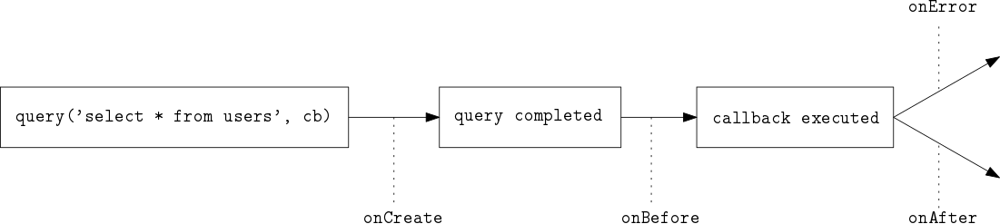

AsyncListener API
@madbence
Sorry
This topic is hardcore!
Try to keep up!
Motivation
Losing call site
function a() { b(); }
function b() { c(); }
function c() { d(); }
function d() { throw new Error(); }
a();
Stack trace:
Error at d (...) at c (...) at b (...) at a (...)
function a() { b(); }
function b() { c(); }
function c() { setTimeout(d, 1000); }
function d() { throw new Error(); }
a();
Stack trace:
Error at d (...)
Motivation
Losing context
function remove(id, cb) {
logger.log('Removing %d', id, ?context);
query(..., cb);
}
- Why was this called?
- What was the failed query?
- Who executed that query?
Ugly solution
Wrap every callback!
// instead of
query('select * from users', cb);
// wrap the callback!
query('select * from users', wrap(cb));
function wrap(cb) {
var state = magically_save_the_context();
return function() {
magically_restore_the_context(state);
return cb.apply(this, arguments);
}
}
Official™ solution
AsyncListener API
- Available in node v0.11
- Polyfill for v0.10 (monkeypatching ☹)
- Experimental
HugeHumongous performance impact ☹☹☹- It's not magic!
- Domains
AsyncListener API
var tracing = require('tracing');
tracing.addAsyncListener({
create: onCreate,
before: onBefore,
after: onAfter,
error: onError,
})

Long stack traces
require('stackup')
require('stackup');
function a() { b(); }
function b() { c(); }
function c() { setTimeout(d, 1000); }
function d() { throw new Error(); }
a();
Stack trace:
Error at d (...) ---- async ---- at c (...) at b (...) at a (...)
Continuation Local Storage
var create = require('continuation-local-storage').createNamespace;
var other = require('./other-file.js');
var ns = create('foo');
ns.run(function () {
ns.set('bar', 1377);
setTimeout(other, 1000);
});
// other-file.js
var lookup = require('continuation-local-storage').getNamespace;
module.exports = function() {
var ns = lookup('foo');
console.log(ns.get('bar')); // 1337
};
Profiling
require('newrelic')
- Instruments your app
- Shows slow operations
- Track anything
That's all, folks!